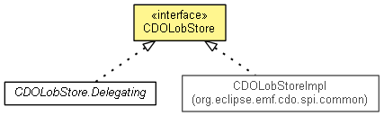

org.eclipse.emf.cdo.common.lob
Interface CDOLobStore
- All Known Implementing Classes:
- CDOLobStore.Delegating, CDOLobStoreImpl
- public interface CDOLobStore

Stores and loads large objects.
- Since:
- 4.0
getBinaryFile
File getBinaryFile(byte[] id)
getBinary
InputStream getBinary(CDOLobInfo info)
throws IOException
- Throws:
IOException
putBinary
CDOLobInfo putBinary(InputStream contents)
throws IOException
- Throws:
IOException
getCharacterFile
File getCharacterFile(byte[] id)
getCharacter
Reader getCharacter(CDOLobInfo info)
throws IOException
- Throws:
IOException
putCharacter
CDOLobInfo putCharacter(Reader contents)
throws IOException
- Throws:
IOException
Copyright (c) 2011, 2012 Eike Stepper (Berlin, Germany) and others.